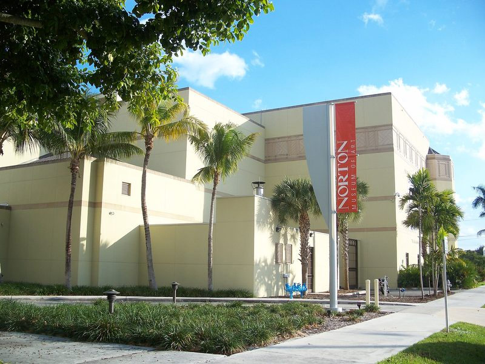

Norton Museum of Art
Founded in 1941 by Ralph and Elizabeth Norton, with a permanent collection of more than 8,900 works across European, American, Asian, contemporary and photography departments, plus a sculpture garden.
West Palm Beach · Official site